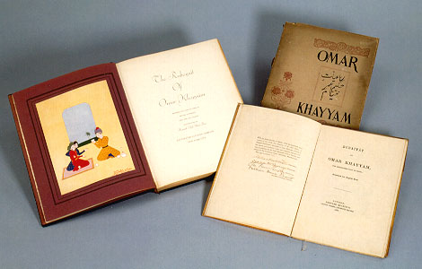

義助慰安婦 —— 李敖百件珍藏義賣藝術品（第68件） 品 名： G2. 珍本限量本《魯拜集》一組（三件一組） 預估價： 6 萬 成交價： 6 萬 說 明： 中國古詩，如五言絕句，用極少的字描寫高妙的詩境；中東經典名著《魯拜集》亦然。李敖所收藏的三種版本，年代雖不久，但印刷一流、圖片考究，如 1938 年版，極少見；尤其是 1859 年版，其特色是出版人每個人都簽名，編號 45 號，全世界只有五十本。 
中國古詩，如五言絕句，用極少的字描寫高妙的詩境；中東經典名著《魯拜集》亦然。李敖所收藏的三種版本，年代雖不久，但印刷一流、圖片考究，如 1938 年版，極少見；尤其是 1859 年版，其特色是出版人每個人都簽名，編號 45 號，全世界只有五十本。